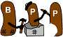

| BPP: The Beanshell Preprocessor |
| The fully caffeinated preprocessor |

|
|
|
|
| Home | Intro | Docs | Download | Contact | ### |
There are lots of scripting options for web-page generation, but they are usually relegated to server-side, implying CPU and security requirments on the server, or client-side, implying support for such on all those nasty web browsers.
How about None of the above? The BPP pages have a consistent look, but are essentially static. So instead of counting on PHP or Javascript, I use BPP to build the pages from a templates using a traditional make file.
Makefile. The make file is very simple: templates come from .bpt files, and each page comes from an html.bpp page:
PAGES=$(subst .html.bpp,.html,$(wildcard *.html.bpp)) TEMPLATES=$(subst .bpt,.bsh,$(wildcard *.bpt)) all : $(TEMPLATES) $(PAGES) %.bsh : %.bpt bpp -o $*.bsh -b $*.bpt %.html : $(TEMPLATES) %.html.bpp bpp -o $*.html $*.html.bppIf you don't use gnu make, I'm sorry for all the typing you have to do, and you're welcome to send me an equivalent ant file to prove it if you would like to.
index.html.bpp. The index (source) page is typical of the other pages:
#title="BPP: Home Page";
# source("sourceall.bsh");
#
# doctype();
<html>
# head();
<body>
# banner();
# menu("Home");
<img src="logos/Two Beans.png" alt="Fancy BPP Logo"/>
# footer();
</body>
</html>
head.bpt. The head template file is very typical:
#void head() {
<head>
<link rel="stylesheet" type="text/css" href="styles.css"/>
<title>$title</title>
</head>
#}
The only non-static content is the title. A more complicated template generates the highlighted menu section:
#void menu(String selected) {
# String [][] m=new String[][] {
# { "Home" , "index.html" },
# { "Intro" , "intro.html" },
# { "Docs" , "docs.html" },
# { "Download" , "download.html" },
# { "Contact" , "contact.html" },
# };
# double percent=100.0/m.length;
#
<table width="100%" border="2" cellspacing="0" cellpadding="0">
<tr>
# for (int i=0; i<m.length; ++i) {
# if (m[i][0].equals(selected)) {
# cls="menu_reverse";
# } else {
# cls="menu";
# }
<td align="center" class="$cls" width="$percent%"><a class="$cls" href="$(m[i][1])"> $(m[i][0]) </a></td>
# }
</tr>
</table>
#}
Purists might complain that I get the highlighting look from a stylesheet, which isn't all that portable, but I'm not saying you have to do it my way.
Each component that needs to be portable can be generated as a new template. Afterwards, a single make rebuilds everything into static vanilla html.
|
Copyright © 2003-2004 Warren D. MacEvoy jr. <wmacevoy@mesastate.edu>
Generated from how.html.bpp with BPP on Sat Apr 23 19:17:55 MDT 2005. HOW |
 |